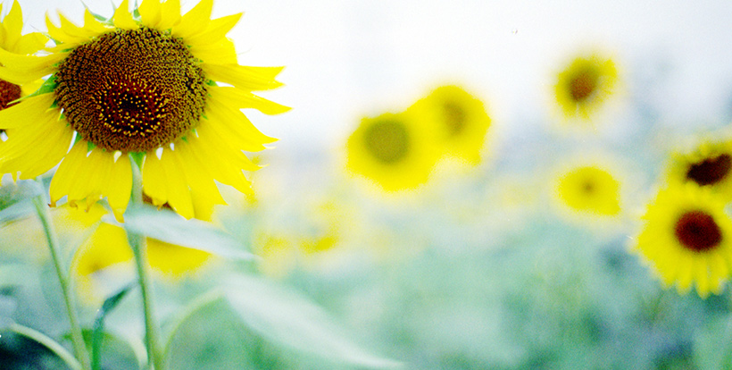
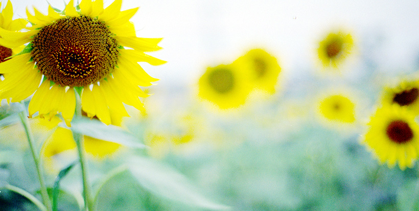
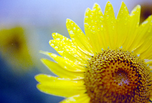
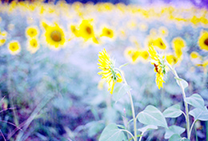
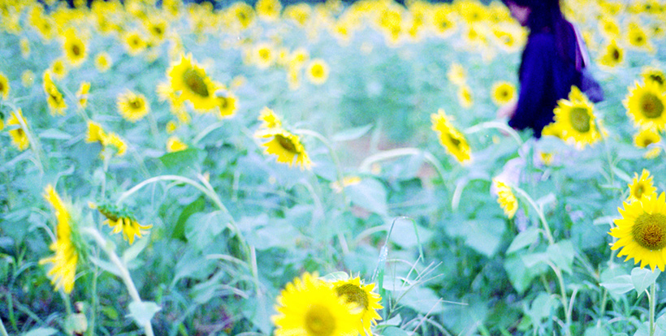

*Introduction*
山梨県北杜市明野のひまわり畑。
青空の下のひまわりも素敵ですが、雨でもまた違った雰囲気の風景を楽しむ事ができます。
水滴の一つ一つまで絵になるひまわり畑。
その日だけの顔を見せてくれるひまわり達に会いにいきませんか？

Hokuto city Akeno sunflower field
山梨県北杜市明野のひまわり畑。
青空の下のひまわりも素敵ですが、雨でもまた違った雰囲気の風景を楽しむ事ができます。
水滴の一つ一つまで絵になるひまわり畑。
その日だけの顔を見せてくれるひまわり達に会いにいきませんか？

ひまわり畑の写真集ができました。
あいにくの雨でがっかりしたのもつかの間・・・
ひまわりのある風景は雨をも吹き飛ばしてくれるそんな演出をしてくれました。
雨の日のひまわり畑を楽しんで頂けましたら幸いです。


